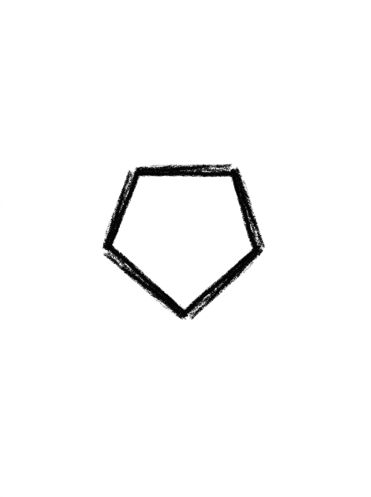
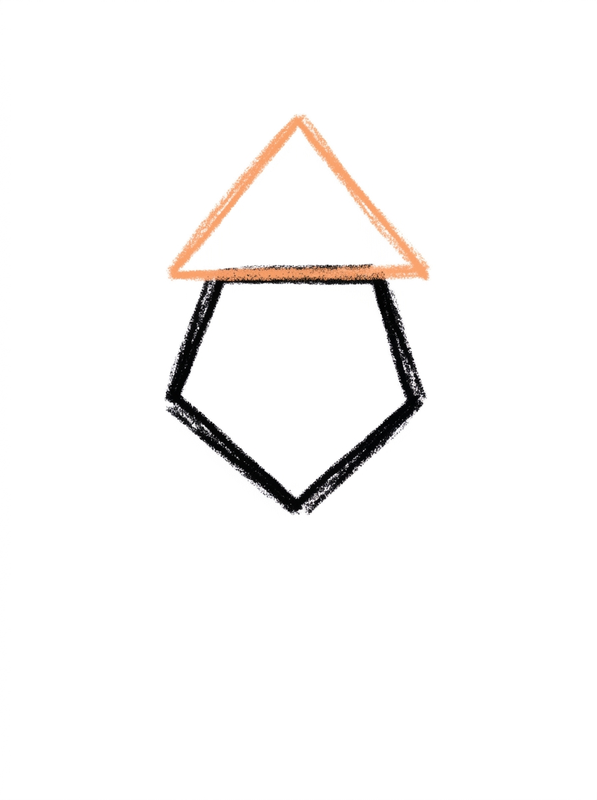
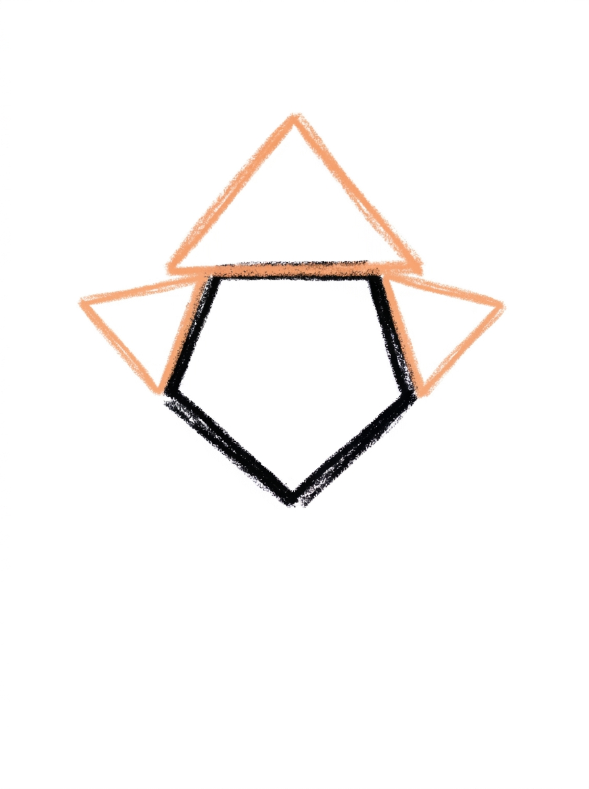
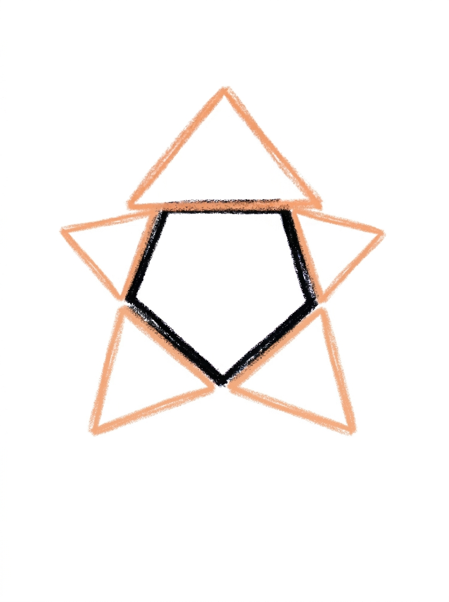
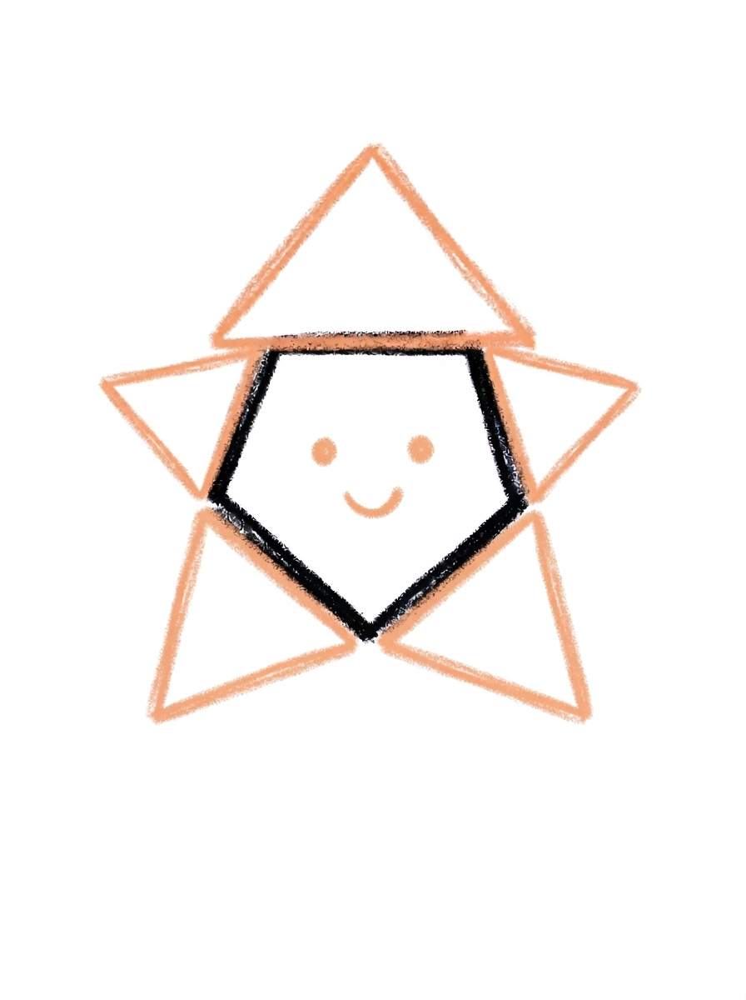

Star Drawing for Kids How to Draw A Star in 6 Easy Steps
Quick Answer
Draw a star in six easy steps: a pentagon center, a triangle point on top, two side points, two bottom points, a face, then golden yellow color. It finishes with five points, two dot eyes, and a smile. Made for ages 3 and up, free, with no signup needed.
At a Glance
- Subject: How to draw a star
- Ages: 3+
- Steps: 6 steps
- Time: ~10 min
- Difficulty: Easy
- Supplies: Paper, crayons
A five-point star looks like it needs a ruler and a very steady hand, but this one is built the easy way — one pentagon in the middle and a triangle for every point. If your child can draw a triangle, they can draw this star, face and all.
✏️ Draw Your Star in 6 Easy Steps
One step per box — this step by step star drawing shows each new part in a different color so kids can see exactly what changed.
Step 1: The Center

Draw a pentagon in the middle of your paper — a shape with five sides and one flat side on top. This will be the middle of your star.
Step 2: The Top Point

Add a triangle on top of the pentagon, sitting right on the flat top side. Point it straight up — that's your star's first point!
Step 3: Two Side Points

Draw a triangle on the upper-left side of the pentagon, and another one on the upper-right side. Now your star has three points.
Step 4: Two Bottom Points

Add two more triangles, one on the lower-left side and one on the lower-right side, pointing down and out. Count them — five points in all!
Step 5: The Face

Draw two round dot eyes in the middle of the pentagon, and a small smile curving up below them.
Step 6: Color It In

Color your star golden yellow all over, points and middle too. Make the eyes solid black and the smile dark brown. Great drawing!
📊 Star Drawing by Age
Every age can join in — just adjust the job.
| Age | What they can do | Tip |
|---|---|---|
| 3-4 | Draw the pentagon center with help and color the finished star golden yellow. | Draw the pentagon big — little hands need room for five triangles around it, and the face needs space in the middle. |
| 4-5 | Add the top point and the two side points, counting the points as they go. | Have them touch each pentagon side before drawing its triangle — one point per side keeps the star even. |
| 6+ | Finish all six steps, including the two bottom points and the face. | Older kids can add a night sky around it — a crescent moon, tiny dots for faraway stars, and their star shining in the middle. |
🖨️ Download Your Free Star Drawing Printable
The printable lays out all 6 steps one per box, big enough for little hands — kids draw right alongside each step.
⬇️ Open Free Printable 🖨️ Print🎁 Free printable for ages 3+
⭐ Star Wish Page
Turn your star into a wishing star: draw a dark blue night sky around it, a crescent moon in one corner, and tiny dots for faraway stars. Then think of one wish, write it under the drawing (or dictate it for a grown-up to write), and hang the page somewhere the star can keep an eye on it.
What You'll Need to Draw A Star
All you need is a pencil, an eraser, and crayons or markers. For the colors in the tutorial, have golden yellow ready for the whole star — points and center — black for the eyes, and dark brown for the smile. Regular printer paper or a sketchbook both work.
What They're Learning
This tutorial practices shape recognition with a real pentagon (five flat sides), triangles, and a simple face. Kids count as they build — five sides on the pentagon, five points on the star — work on balance by placing matching points on the left and right, and practice the draw-compare-continue habit by checking each new triangle against its side before moving on.
Make It Yours
Try a silver star colored with a grey or metallic crayon, a rainbow star with a different color on every point, a sleepy star with curved closed eyes and a tiny nightcap, or a whole sky of stars in different sizes using the same steps. A big star on a stick becomes a magic wand for pretend play.
🛒 Our Favorite Drawing Supplies
These are the supplies we reach for in our own home — washable (because kids), quality paper, and enough colors to avoid fights.
As an Amazon Associate, MomYouNeedThis earns from qualifying purchases — at no extra cost to you.
💡 Star Drawing Tips for Parents
The pentagon in step 1 is the trickiest shape here. An easy way in: draw it like a house — a square with a flat roof line — then count the five sides together before moving on. Start it in the middle of the page and draw it bigger than feels necessary; the five triangles and the face all need that room.
The two lower points in step 4 are the ones kids most often forget or squeeze in. Slow down and count the points out loud after step 3 (three) and step 4 (five). If a point leans or comes out longer than its neighbor, leave it — a slightly wobbly star with a smile still reads perfectly as a star.
⭐ Stars in the Real World
Real stars do not have points at all. A star is an enormous ball of glowing gas — our own sun is one — and it looks tiny only because it is almost unimaginably far away. The pointed star in this drawing is a symbol people invented: a quick way to say 'star' that appears on flags, wands, badges, and the tops of Christmas trees.
Long ago, people grouped bright stars into patterns called constellations and told stories about them — hunters, bears, queens in the sky. Your child already knows the rules of that game: pick some lights, connect them in your head, name the picture. Ask what constellation they would invent.
✋ Warm-Up: Join the Dots
A drawn star is a dot-to-dot in disguise. Scatter five dots on scrap paper and join them with straight lines — dot to dot to dot — until a star-ish shape appears. It does not need to be tidy; the game is aiming a straight line at a chosen point, which is the exact skill the tutorial uses, minus any pressure.
Then draw sparkles freely: quick crosses and X's of different sizes, the way cartoons draw shine. If the careful star frustrates, the free sparkles reset the mood — drawing is supposed to feel good at least half the time.
📖 Give Your Star a Story
Stars are for wishing on, so this drawing comes with a decision: what is the wish? Keep it secret or dictate it for under the drawing — either way, naming a wish turns a shape exercise into the first page of a story. Who else can see this star? A sailor, a owl, a kid in a tent?
The angel tutorial shares this star's sky. Drawing the angel next gives the night a resident — and gives your child a two-page night scene they built one calm drawing at a time. Keep the sparkle going with how to draw a diamond, or trade the night sky for a snowy one in how to draw a snowflake.
❓ Star Drawing FAQs
What is the easiest way to draw a star?
Start with a pentagon in the middle of the page, then add one triangle per side: one on top, two on the upper sides, and two on the lower sides. Finish with two dot eyes and a smile, then color it golden yellow.
What age is this star drawing for?
It's made for ages 3 and up. The shapes are all preschool-friendly — a pentagon, triangles, and dots — and younger kids can draw the center and color while older kids add all five points and the face themselves.
What supplies do we need?
A pencil, an eraser, paper, and crayons or markers. For colors you'll want golden yellow for the whole star, black for the eyes, and dark brown for the smile.
Is the printable really free?
Yes — every printable on MomYouNeedThis is 100% free, including this star drawing tutorial. There is no signup, no email, and no catch — just download, print, and draw.
How do I print it?
Open the PDF and choose Print, then set the scale to 100% (sometimes called Actual Size) so the steps print at full size. The tutorial is designed for regular US Letter paper, and plain printer paper works perfectly.
Why does this star start with a pentagon?
The pentagon gives every point a flat side to sit on, so the triangles land evenly instead of wobbling around a center point. It's the trick that makes a tidy five-point star easy enough for preschoolers.
How many points does the star have?
Five — one pointing up from the top, two on the upper-left and upper-right sides, and two on the lower-left and lower-right sides, pointing down and out. Counting them as you finish is a built-in high five moment.
Can my star be a different color?
Absolutely — try a silver star, a pink star, or give every point a different rainbow color. The face can change too: swap the open dot eyes for curved closed eyes and your star is sleepy instead of smiley.
📚 Keep Exploring
- ✏️ All 76 Drawing Tutorials 76 free step-by-step drawing tutorials for kids.
- 🎀 Cute Coloring Free cute coloring pages for kids.
- ✏️ Drawing Practice Free printable drawing pre-writing worksheet for toddlers.